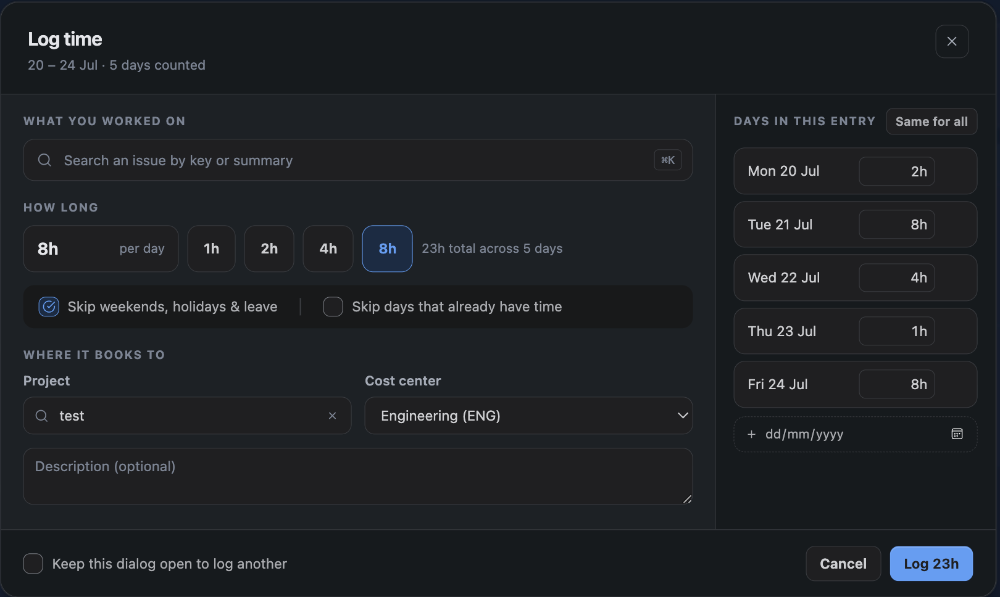
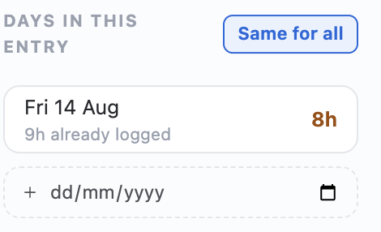

Time is logged against a project and a cost centre, on a date, for a number of minutes. A Jira issue is optional — plenty of real work does not have one, and TimeSheets does not pretend otherwise.
1. The Log time button
Log time in the Hub header is a split control. The button itself opens the dialog, one click as always. The three dots beside it offer the alternatives:
| Choice | What it does |
|---|---|
| Log time… | The dialog — one project, as many rows as you need |
| From a template… | A saved set of rows applied to a date, and the only way to log across several projects at once |
The main button is deliberately not a menu. Turning the common case into a two-step choice to expose an occasional alternative would tax every routine use.
2. The Log time dialog
Open it from the Hub, from a project page, or by double-clicking a day in the Calendar. Starting from the Calendar pre-fills the date.

| Field | Notes |
|---|---|
| Date | Defaults to today, or to the day you clicked in the Calendar |
| Project | Chosen once for the whole dialog. Only projects you can browse in Jira, and which have at least one cost centre |
| Cost centre | Chosen once for the whole dialog. Only those assigned to the project; changing project resets it |
| Duration | Hours and minutes, in 5-minute steps. The smallest entry is 5 minutes |
| Issue | Optional. Search by key or summary |
| Description | Optional free text — see the note below |
Descriptions are visible to your approvers and appear in exports. Keep them about the work.
3. Several rows at once
The dialog takes multiple rows, so several pieces of work go in as one save. Add a row with Add row.
The project and cost centre are chosen once and shared by every row. A row varies only by date, duration, description and issue. To log against two different projects you save twice — or use a template, which is the one thing that can span projects in a single action.
Rows can span different dates, which is the quickest way to catch up after a few days away without opening the dialog repeatedly.
If any row is invalid the save is refused and the offending row is marked — nothing is saved by halves.
4. The daily hours meter
As you type, a meter shows how much you have logged that day against your working day. It reads, for example, 6h / 8h when your working day is eight hours.
The meter is guidance, not a limit. The only hard ceiling is 24 hours per person per day, which the server enforces as well as the browser — you cannot get past it by calling the API directly.

5. Increments, and why they are five minutes
Entries are whole 5-minute steps. That is small enough to be honest about short pieces of work and large enough that a timesheet does not become an exercise in false precision.
Billing can round differently — an organisation that bills in 15-minute or hourly blocks sets that separately, and the timesheet still shows what was actually worked. See Billing Rates.
6. Copying a previous week
Copy previous week duplicates last week's entries onto this week, matching day for day. Find it on the Summary tab, in the *My week* panel, and on the matching dashboard gadget. It is meant for genuinely repeating work — a standing allocation to a project, a recurring internal meeting.
Copies are new entries in draft or pending state, exactly as if you had typed them. Review them before submitting: a copied week that nobody looked at is how a timesheet stops meaning anything.
If a cost centre used last week has since been detached from the project or deactivated, the copy fails and names the cost centre. Fix the entry or ask an administrator to reattach it.
7. Editing and deleting
You can edit or delete your own entries while they are still editable. An entry stops being editable when:
- its date falls outside the lock window — see Timesheet Locking;
- in weekly mode, its week has been submitted or approved — see Weekly Submission;
- it has been billed on an issued invoice, which cannot be undone without voiding that invoice.
Each of those gives a distinct message so you know which one applies and what to do about it.
8. Caps you may run into
| Cap | Where it is set | What happens |
|---|---|---|
| 24 hours per day | Fixed | The save is refused |
| Cost centre allotment | Cost centre | Refused once the cost centre's total hours are used up |
| Weekly billable cap | Project settings | Refused once billable time on that project exceeds the weekly limit |
All three are checked on the server at save time, not only in the browser.